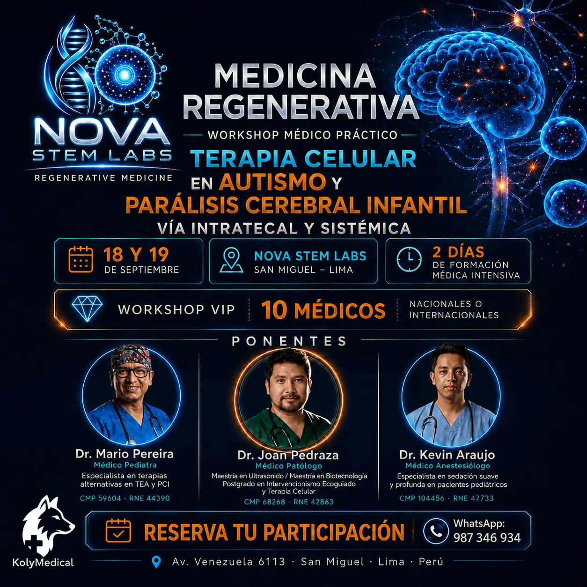
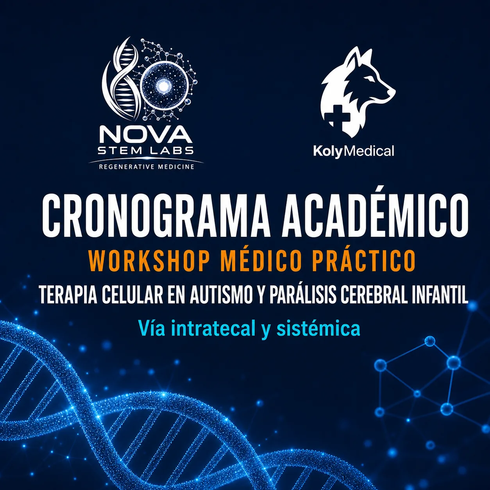
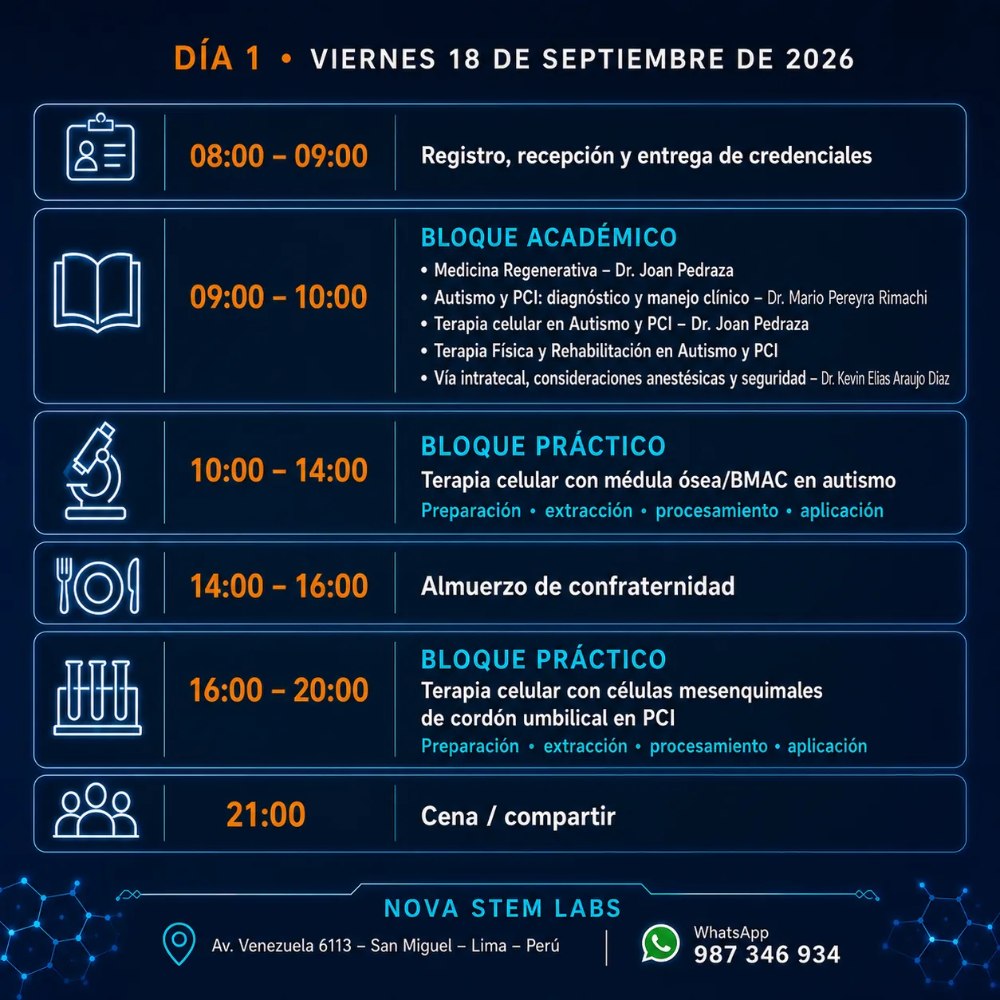
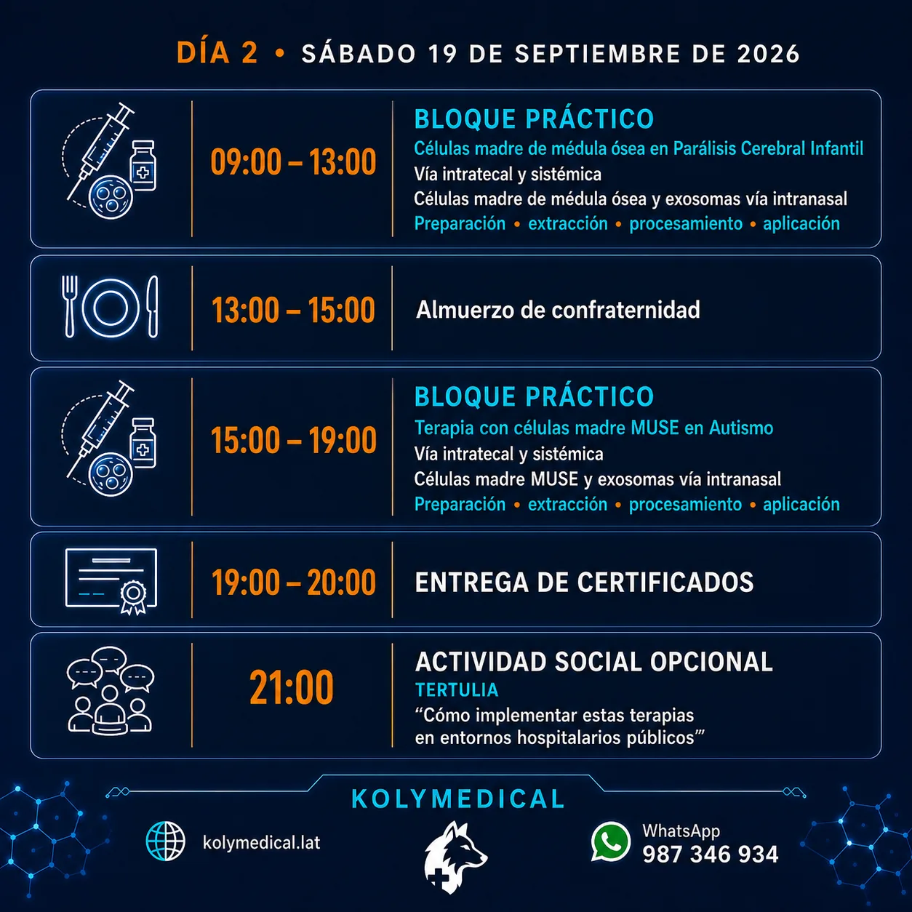

Workshop Médico Práctico de Terapia Celular
Autismo y parálisis cerebral infantil: vía intratecal y sistémica.
Los días viernes 18 y sábado 19 de septiembre de 2026, NOVA STEM LABS y KolyMedical reunirán a médicos interesados en medicina regenerativa para una experiencia intensiva que combina fundamentos académicos, revisión clínica y práctica aplicada.
Workshop VIP: cupos limitados para 10 médicos nacionales o internacionales.
Fechas18 y 19 de septiembre de 2026
LugarNOVA STEM LABS, San Miguel, Lima
ModalidadAcadémica y práctica presencial
Dirigido aProfesionales médicos
¿Qué encontrarás en este workshop?
- Actualización en medicina regenerativa y abordaje clínico de autismo y parálisis cerebral infantil.
- Terapia celular por vía intratecal y sistémica.
- Trabajo práctico con médula ósea, BMAC y células mesenquimales de cordón umbilical.
- Revisión de células madre MUSE y exosomas por vía intranasal.
- Consideraciones anestésicas, seguridad, preparación, extracción, procesamiento y aplicación.
- Intercambio profesional y entrega de certificados.
Formato VIP · 10 médicos
Inversión y experiencia incluida
USD 2,000
Inversión total del curso. Las condiciones de inscripción se coordinan directamente con el asesor de KolyMedical.
Incluye
- Dos días de formación académica y práctica intensiva.
- Prácticas de preparación, extracción, procesamiento y aplicación.
- Interacción directa con los ponentes y cupo VIP.
- Almuerzos de confraternidad y entrega de certificado.
- Kit del participante: scrub, mochila, cuaderno, lapicero y credenciales.

Ponentes
Dr. Joan PedrazaMédico patólogo · CMP 68268 · RNE 42863
Dr. Mario Pereyra RimachiMédico pediatra · CMP 59604 · RNE 44390
Dr. Kevin Elias Araujo DiazMédico anestesiólogo · CMP 104456 · RNE 47733
Cronograma académico



Cupos limitados
WhatsApp 987 346 934
Reserva tu participación
Solicita información sobre inscripción, disponibilidad y condiciones del workshop.
¿Deseas participar?
Conversemos directamente contigo
Completa tus datos profesionales y nuestro equipo comercial podrá brindarte disponibilidad, inversión vigente y condiciones de inscripción.